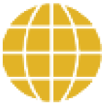
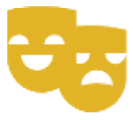
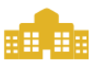

Educación Integral
Atendemos no solo el intelecto, sino también la dimensión física, los afectos y el desarrollo de la voluntad.
Formación en valores
Contamos con un sólido plan de formación que incluye el acompañamiento individual a cada alumno a cargo de un preceptor.
PLAS
Formamos líderes católicos que sean agentes de cambio en la sociedad.

Idiomas: Alemán e
Inglés
(Certificaciones)
Fomentamos en nuestros alumnos el desarrollo de competencias comunicativas en los idiomas español, alemán e inglés; con el fin de que puedan acceder a la certificación DSD del gobierno Alemán y a las certificaciones Cambridge de Inglés.
Programa del
Diploma del Bachillerato
Internacional
El PD se pone a disposición de los alumnos de Secundaria Alta que cumplan con aprobar los requisitos establecidos para su ingreso al mismo.

Artes
Brindamos clases y talleres de música, artes plásticas, danzas, entre otros, como vehículos importantes de expresión.
Deportes
Buscamos fortalecer el desarrollo físico de nuestros alumnos, así como hábitos de vida saludables y valores como la perseverancia, el esfuerzo y la competitividad.

Amplias y modernas
instalaciones
Contamos con un local de 25 000 m2, amplias áreas verdes, aulas equipadas con multimedia, laboratorios de ciencias y de informática, coliseos, capilla, comedor.